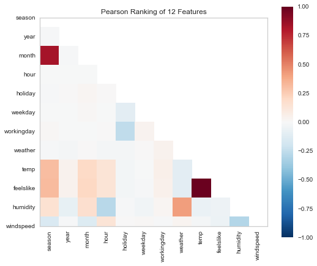

Interaction Terms in Python
Vanilla OLS
Say we’ve got a dataset
from warnings import filterwarnings
filterwarnings('ignore')from yellowbrick.datasets import load_bikeshare
X, y = load_bikeshare()Where we measure the number of DC-area bikes rented
y.head()0 16
1 40
2 32
3 13
4 1
Name: riders, dtype: int64
Based on a number of features
X.head()| season | year | month | hour | holiday | weekday | workingday | weather | temp | feelslike | humidity | windspeed | |
|---|---|---|---|---|---|---|---|---|---|---|---|---|
| 0 | 1 | 0 | 1 | 0 | 0 | 6 | 0 | 1 | 0.24 | 0.2879 | 0.81 | 0.0 |
| 1 | 1 | 0 | 1 | 1 | 0 | 6 | 0 | 1 | 0.22 | 0.2727 | 0.80 | 0.0 |
| 2 | 1 | 0 | 1 | 2 | 0 | 6 | 0 | 1 | 0.22 | 0.2727 | 0.80 | 0.0 |
| 3 | 1 | 0 | 1 | 3 | 0 | 6 | 0 | 1 | 0.24 | 0.2879 | 0.75 | 0.0 |
| 4 | 1 | 0 | 1 | 4 | 0 | 6 | 0 | 1 | 0.24 | 0.2879 | 0.75 | 0.0 |
And just shoving everything into a Logistic Regression seems to work… alright
from statsmodels.api import OLS
import statsmodels.api as sm
X_const = sm.add_constant(X)
model = OLS(y, X_const).fit()
model.summary()| Dep. Variable: | riders | R-squared: | 0.389 |
|---|---|---|---|
| Model: | OLS | Adj. R-squared: | 0.388 |
| Method: | Least Squares | F-statistic: | 920.8 |
| Date: | Thu, 12 Sep 2019 | Prob (F-statistic): | 0.00 |
| Time: | 12:39:26 | Log-Likelihood: | -1.1076e+05 |
| No. Observations: | 17379 | AIC: | 2.216e+05 |
| Df Residuals: | 17366 | BIC: | 2.217e+05 |
| Df Model: | 12 | ||
| Covariance Type: | nonrobust |
| coef | std err | t | P>|t| | [0.025 | 0.975] | |
|---|---|---|---|---|---|---|
| const | -25.7573 | 7.057 | -3.650 | 0.000 | -39.590 | -11.925 |
| season | 19.8993 | 1.819 | 10.941 | 0.000 | 16.334 | 23.464 |
| year | 81.0872 | 2.164 | 37.463 | 0.000 | 76.845 | 85.330 |
| month | -0.0086 | 0.567 | -0.015 | 0.988 | -1.120 | 1.103 |
| hour | 7.6706 | 0.165 | 46.513 | 0.000 | 7.347 | 7.994 |
| holiday | -21.8792 | 6.694 | -3.268 | 0.001 | -35.001 | -8.758 |
| weekday | 1.8784 | 0.541 | 3.474 | 0.001 | 0.819 | 2.938 |
| workingday | 3.9392 | 2.396 | 1.644 | 0.100 | -0.756 | 8.635 |
| weather | -3.4321 | 1.905 | -1.802 | 0.072 | -7.165 | 0.301 |
| temp | 78.1498 | 36.957 | 2.115 | 0.034 | 5.710 | 150.590 |
| feelslike | 233.1571 | 41.517 | 5.616 | 0.000 | 151.779 | 314.535 |
| humidity | -198.1847 | 6.889 | -28.770 | 0.000 | -211.687 | -184.682 |
| windspeed | 41.5652 | 9.628 | 4.317 | 0.000 | 22.692 | 60.438 |
| Omnibus: | 3417.855 | Durbin-Watson: | 0.553 |
|---|---|---|---|
| Prob(Omnibus): | 0.000 | Jarque-Bera (JB): | 6659.872 |
| Skew: | 1.198 | Prob(JB): | 0.00 |
| Kurtosis: | 4.859 | Cond. No. | 787. |
Warnings:
[1] Standard Errors assume that the covariance matrix of the errors is correctly specified.
But at the same time, have good reason to believe that there’s some colinearity/interaction at play with our features.
from yellowbrick.features import Rank2D
visualizer = Rank2D(algorithm='pearson', size=(600, 500))
visualizer.fit_transform(X)
visualizer.poof();C:\Users\Nick\Anaconda3\lib\site-packages\yellowbrick\features\rankd.py:215: YellowbrickWarning: RankD plots may be clipped when using matplotlib v3.1.1, upgrade to matplotlib v3.1.2 or later to fix the plots.
warnings.warn(msg, YellowbrickWarning)

Interaction Terms
From here, a good data scientist will take the time to do exploratory analysis and thoughtful feature engineering– this is the “More Art than Science” adage you hear so often.
But we’re trying to be home by 5, so how do we cram everything in and see what shakes out?
Getting Values
Thankfully, the PolynomialFeatures object in sklearn has us mostly-covered.
It’s originally used to generate sequences of (b_i1 * x_i) + (b_i2 * x_i^2) + ... for each feature in X, taking us from n features to 2^n features (in the case of PolynomialFeatures(degree=2), anyhow).
We’re not interested in polynomials, per se, but if you squint, the same itertools magic™ that powers the backend of this can also be used to provide all pairwise feature combinations, with minimal rewriting. They provide this, ez pz, with the interaction_only flag.
And so we go from
X.shape(17379, 12)
To an expected $\frac{p * (p - 1)}{2}$ pairs, plus our original p features, plus a bias term
p = len(X.columns)
(p * (p-1)) / 2 + p + 179.0
Coolio
from sklearn.preprocessing import PolynomialFeatures
interaction = PolynomialFeatures(degree=2, interaction_only=True, include_bias=False)
X_inter = interaction.fit_transform(X)
X_inter_const = sm.add_constant(X_inter)
X_inter_const.shape(17379, 79)
Now we brazenly throw it into a new model, and… oh. A lot of features called x
model = OLS(y, X_inter_const).fit()
model.summary()| Dep. Variable: | riders | R-squared: | 0.449 |
|---|---|---|---|
| Model: | OLS | Adj. R-squared: | 0.447 |
| Method: | Least Squares | F-statistic: | 183.2 |
| Date: | Thu, 12 Sep 2019 | Prob (F-statistic): | 0.00 |
| Time: | 12:39:26 | Log-Likelihood: | -1.0986e+05 |
| No. Observations: | 17379 | AIC: | 2.199e+05 |
| Df Residuals: | 17301 | BIC: | 2.205e+05 |
| Df Model: | 77 | ||
| Covariance Type: | nonrobust |
| coef | std err | t | P>|t| | [0.025 | 0.975] | |
|---|---|---|---|---|---|---|
| const | -12.9215 | 31.348 | -0.412 | 0.680 | -74.367 | 48.524 |
| x1 | 4.8668 | 13.591 | 0.358 | 0.720 | -21.773 | 31.506 |
| x2 | 1.5025 | 13.709 | 0.110 | 0.913 | -25.368 | 28.373 |
| x3 | -5.6567 | 3.650 | -1.550 | 0.121 | -12.811 | 1.497 |
| x4 | -1.5711 | 1.010 | -1.555 | 0.120 | -3.551 | 0.409 |
| x5 | -53.5016 | 42.280 | -1.265 | 0.206 | -136.374 | 29.371 |
| x6 | -5.8416 | 3.221 | -1.814 | 0.070 | -12.155 | 0.471 |
| x7 | -59.3405 | 14.670 | -4.045 | 0.000 | -88.095 | -30.586 |
| x8 | 24.8815 | 12.260 | 2.030 | 0.042 | 0.851 | 48.912 |
| x9 | 967.3801 | 242.465 | 3.990 | 0.000 | 492.123 | 1442.637 |
| x10 | -398.7968 | 267.389 | -1.491 | 0.136 | -922.906 | 125.313 |
| x11 | 29.5847 | 38.027 | 0.778 | 0.437 | -44.953 | 104.122 |
| x12 | -174.6887 | 55.839 | -3.128 | 0.002 | -284.138 | -65.239 |
| x13 | -2.0902 | 3.782 | -0.553 | 0.580 | -9.503 | 5.322 |
| x14 | 1.9024 | 0.528 | 3.600 | 0.000 | 0.867 | 2.938 |
| x15 | 0.7962 | 0.259 | 3.071 | 0.002 | 0.288 | 1.304 |
| x16 | 10.7146 | 8.522 | 1.257 | 0.209 | -5.990 | 27.419 |
| x17 | 0.8804 | 0.890 | 0.989 | 0.323 | -0.864 | 2.625 |
| x18 | -3.3540 | 3.979 | -0.843 | 0.399 | -11.152 | 4.444 |
| x19 | 5.1034 | 3.100 | 1.646 | 0.100 | -0.972 | 11.179 |
| x20 | -224.2428 | 86.181 | -2.602 | 0.009 | -393.166 | -55.320 |
| x21 | 175.4640 | 94.973 | 1.848 | 0.065 | -10.693 | 361.621 |
| x22 | -20.6737 | 12.747 | -1.622 | 0.105 | -45.659 | 4.312 |
| x23 | 27.4909 | 16.320 | 1.685 | 0.092 | -4.497 | 59.479 |
| x24 | 2.0389 | 1.193 | 1.709 | 0.087 | -0.299 | 4.377 |
| x25 | 2.7809 | 0.318 | 8.752 | 0.000 | 2.158 | 3.404 |
| x26 | -10.2711 | 13.890 | -0.739 | 0.460 | -37.497 | 16.955 |
| x27 | 3.0712 | 1.047 | 2.932 | 0.003 | 1.018 | 5.124 |
| x28 | 18.9473 | 4.631 | 4.092 | 0.000 | 9.870 | 28.024 |
| x29 | 1.8761 | 3.686 | 0.509 | 0.611 | -5.349 | 9.101 |
| x30 | -157.1947 | 81.641 | -1.925 | 0.054 | -317.219 | 2.830 |
| x31 | 281.8987 | 91.747 | 3.073 | 0.002 | 102.066 | 461.731 |
| x32 | -86.9838 | 13.435 | -6.475 | 0.000 | -113.317 | -60.650 |
| x33 | 56.9213 | 18.839 | 3.021 | 0.003 | 19.995 | 93.848 |
| x34 | -0.1121 | 0.081 | -1.390 | 0.165 | -0.270 | 0.046 |
| x35 | -2.2869 | 2.442 | -0.937 | 0.349 | -7.073 | 2.499 |
| x36 | -0.2278 | 0.277 | -0.823 | 0.410 | -0.770 | 0.314 |
| x37 | 1.5086 | 1.241 | 1.215 | 0.224 | -0.924 | 3.942 |
| x38 | -0.1445 | 0.980 | -0.147 | 0.883 | -2.066 | 1.777 |
| x39 | 18.2864 | 29.504 | 0.620 | 0.535 | -39.544 | 76.117 |
| x40 | 19.1531 | 32.093 | 0.597 | 0.551 | -43.752 | 82.059 |
| x41 | -12.4987 | 4.016 | -3.112 | 0.002 | -20.370 | -4.627 |
| x42 | -7.3676 | 5.377 | -1.370 | 0.171 | -17.907 | 3.172 |
| x43 | -0.5631 | 1.007 | -0.559 | 0.576 | -2.537 | 1.411 |
| x44 | 0.1410 | 0.079 | 1.785 | 0.074 | -0.014 | 0.296 |
| x45 | 2.6202 | 0.349 | 7.515 | 0.000 | 1.937 | 3.304 |
| x46 | -0.7095 | 0.269 | -2.638 | 0.008 | -1.237 | -0.182 |
| x47 | 14.8862 | 6.398 | 2.327 | 0.020 | 2.346 | 27.427 |
| x48 | 1.7138 | 7.105 | 0.241 | 0.809 | -12.213 | 15.641 |
| x49 | -4.8835 | 1.044 | -4.676 | 0.000 | -6.931 | -2.836 |
| x50 | 2.9944 | 1.512 | 1.980 | 0.048 | 0.031 | 5.958 |
| x51 | -15.1452 | 5.540 | -2.734 | 0.006 | -26.004 | -4.287 |
| x52 | -1.182e-10 | 4.83e-10 | -0.245 | 0.807 | -1.06e-09 | 8.28e-10 |
| x53 | 8.2441 | 13.453 | 0.613 | 0.540 | -18.126 | 34.614 |
| x54 | 86.9426 | 321.342 | 0.271 | 0.787 | -542.920 | 716.805 |
| x55 | -105.9596 | 360.484 | -0.294 | 0.769 | -812.544 | 600.625 |
| x56 | 89.3853 | 42.836 | 2.087 | 0.037 | 5.422 | 173.349 |
| x57 | 44.2759 | 61.352 | 0.722 | 0.471 | -75.981 | 164.533 |
| x58 | 0.1447 | 1.103 | 0.131 | 0.896 | -2.017 | 2.307 |
| x59 | 1.0061 | 0.954 | 1.054 | 0.292 | -0.865 | 2.877 |
| x60 | -5.9934 | 21.479 | -0.279 | 0.780 | -48.095 | 36.108 |
| x61 | 5.8283 | 24.149 | 0.241 | 0.809 | -41.507 | 53.163 |
| x62 | 2.8903 | 3.350 | 0.863 | 0.388 | -3.675 | 9.456 |
| x63 | 3.8508 | 4.730 | 0.814 | 0.416 | -5.420 | 13.121 |
| x64 | -16.6488 | 4.196 | -3.967 | 0.000 | -24.874 | -8.424 |
| x65 | 177.4266 | 99.436 | 1.784 | 0.074 | -17.478 | 372.331 |
| x66 | -327.3872 | 111.723 | -2.930 | 0.003 | -546.376 | -108.399 |
| x67 | 182.2881 | 14.743 | 12.364 | 0.000 | 153.390 | 211.186 |
| x68 | -14.7536 | 20.919 | -0.705 | 0.481 | -55.757 | 26.250 |
| x69 | -52.0472 | 71.177 | -0.731 | 0.465 | -191.562 | 87.467 |
| x70 | 62.3664 | 79.334 | 0.786 | 0.432 | -93.136 | 217.869 |
| x71 | -17.1516 | 9.734 | -1.762 | 0.078 | -36.230 | 1.927 |
| x72 | -91.6947 | 15.635 | -5.865 | 0.000 | -122.342 | -61.048 |
| x73 | -435.5407 | 39.880 | -10.921 | 0.000 | -513.709 | -357.372 |
| x74 | -395.4048 | 247.880 | -1.595 | 0.111 | -881.275 | 90.465 |
| x75 | 165.5110 | 300.640 | 0.551 | 0.582 | -423.774 | 754.796 |
| x76 | 94.8156 | 284.153 | 0.334 | 0.739 | -462.153 | 651.784 |
| x77 | 133.3275 | 336.596 | 0.396 | 0.692 | -526.434 | 793.089 |
| x78 | 195.9651 | 54.599 | 3.589 | 0.000 | 88.945 | 302.985 |
| Omnibus: | 3803.577 | Durbin-Watson: | 0.621 |
|---|---|---|---|
| Prob(Omnibus): | 0.000 | Jarque-Bera (JB): | 8630.456 |
| Skew: | 1.246 | Prob(JB): | 0.00 |
| Kurtosis: | 5.390 | Cond. No. | 1.24e+16 |
Warnings:
[1] Standard Errors assume that the covariance matrix of the errors is correctly specified.
[2] The smallest eigenvalue is 1.64e-24. This might indicate that there are
strong multicollinearity problems or that the design matrix is singular.
Feature Names?
The interaction object keeps track of the names of our feature combinations… sort of
print(interaction.get_feature_names())['x0', 'x1', 'x2', 'x3', 'x4', 'x5', 'x6', 'x7', 'x8', 'x9', 'x10', 'x11', 'x0 x1', 'x0 x2', 'x0 x3', 'x0 x4', 'x0 x5', 'x0 x6', 'x0 x7', 'x0 x8', 'x0 x9', 'x0 x10', 'x0 x11', 'x1 x2', 'x1 x3', 'x1 x4', 'x1 x5', 'x1 x6', 'x1 x7', 'x1 x8', 'x1 x9', 'x1 x10', 'x1 x11', 'x2 x3', 'x2 x4', 'x2 x5', 'x2 x6', 'x2 x7', 'x2 x8', 'x2 x9', 'x2 x10', 'x2 x11', 'x3 x4', 'x3 x5', 'x3 x6', 'x3 x7', 'x3 x8', 'x3 x9', 'x3 x10', 'x3 x11', 'x4 x5', 'x4 x6', 'x4 x7', 'x4 x8', 'x4 x9', 'x4 x10', 'x4 x11', 'x5 x6', 'x5 x7', 'x5 x8', 'x5 x9', 'x5 x10', 'x5 x11', 'x6 x7', 'x6 x8', 'x6 x9', 'x6 x10', 'x6 x11', 'x7 x8', 'x7 x9', 'x7 x10', 'x7 x11', 'x8 x9', 'x8 x10', 'x8 x11', 'x9 x10', 'x9 x11', 'x10 x11']
Assuming that a bevy of xi xjs aren’t much more useful than the output of model.summary() we can do some hacky, Python nonsense to decode a bit.
For starters, we want to create a dictionary that maps xi to its corresponding feature name in our dataset.
We’ll use the itertools.count() function, as it’s basically enumerate, but plays better with generator expressions.
from itertools import count
x_to_feature = dict(zip(('x{}'.format(i) for i in count()), X.columns))
x_to_feature{'x0': 'season',
'x1': 'year',
'x2': 'month',
'x3': 'hour',
'x4': 'holiday',
'x5': 'weekday',
'x6': 'workingday',
'x7': 'weather',
'x8': 'temp',
'x9': 'feelslike',
'x10': 'humidity',
'x11': 'windspeed'}
Next, you know it’s Sound Data Science™ when we break out
import reFinally, this little diddy goes through and makes the appropriate substitutions for xi to their respective feature names, then replaces spaces with underscores so pandas references isn’t such a chore
# necessary so `x11` gets a chance to swap before
# before `x1` leaves us with "season1" where we wanted
# "windspeed"
feature_keys = list(x_to_feature.keys())[::-1]
features = []
for feature in interaction.get_feature_names():
for key in feature_keys:
feature_name = x_to_feature[key]
feature = re.sub(key, feature_name, feature)
feature = re.sub(' ', '_', feature)
features.append(feature)Then we’ll slap these feature names onto our big ol’ dataset
import pandas as pd
import statsmodels.api as sm
X_all_inter = pd.DataFrame(X_inter, columns=features)
X_all_inter_const = sm.add_constant(X_all_inter)And refit
model = OLS(y, X_all_inter_const).fit()
model.summary()| Dep. Variable: | riders | R-squared: | 0.449 |
|---|---|---|---|
| Model: | OLS | Adj. R-squared: | 0.447 |
| Method: | Least Squares | F-statistic: | 183.2 |
| Date: | Thu, 12 Sep 2019 | Prob (F-statistic): | 0.00 |
| Time: | 12:39:27 | Log-Likelihood: | -1.0986e+05 |
| No. Observations: | 17379 | AIC: | 2.199e+05 |
| Df Residuals: | 17301 | BIC: | 2.205e+05 |
| Df Model: | 77 | ||
| Covariance Type: | nonrobust |
| coef | std err | t | P>|t| | [0.025 | 0.975] | |
|---|---|---|---|---|---|---|
| const | -12.9215 | 31.348 | -0.412 | 0.680 | -74.367 | 48.524 |
| season | 4.8668 | 13.591 | 0.358 | 0.720 | -21.773 | 31.506 |
| year | 1.5025 | 13.709 | 0.110 | 0.913 | -25.368 | 28.373 |
| month | -5.6567 | 3.650 | -1.550 | 0.121 | -12.811 | 1.497 |
| hour | -1.5711 | 1.010 | -1.555 | 0.120 | -3.551 | 0.409 |
| holiday | -53.5016 | 42.280 | -1.265 | 0.206 | -136.374 | 29.371 |
| weekday | -5.8416 | 3.221 | -1.814 | 0.070 | -12.155 | 0.471 |
| workingday | -59.3405 | 14.670 | -4.045 | 0.000 | -88.095 | -30.586 |
| weather | 24.8815 | 12.260 | 2.030 | 0.042 | 0.851 | 48.912 |
| temp | 967.3801 | 242.465 | 3.990 | 0.000 | 492.123 | 1442.637 |
| feelslike | -398.7968 | 267.389 | -1.491 | 0.136 | -922.906 | 125.313 |
| humidity | 29.5847 | 38.027 | 0.778 | 0.437 | -44.953 | 104.122 |
| windspeed | -174.6887 | 55.839 | -3.128 | 0.002 | -284.138 | -65.239 |
| season_year | -2.0902 | 3.782 | -0.553 | 0.580 | -9.503 | 5.322 |
| season_month | 1.9024 | 0.528 | 3.600 | 0.000 | 0.867 | 2.938 |
| season_hour | 0.7962 | 0.259 | 3.071 | 0.002 | 0.288 | 1.304 |
| season_holiday | 10.7146 | 8.522 | 1.257 | 0.209 | -5.990 | 27.419 |
| season_weekday | 0.8804 | 0.890 | 0.989 | 0.323 | -0.864 | 2.625 |
| season_workingday | -3.3540 | 3.979 | -0.843 | 0.399 | -11.152 | 4.444 |
| season_weather | 5.1034 | 3.100 | 1.646 | 0.100 | -0.972 | 11.179 |
| season_temp | -224.2428 | 86.181 | -2.602 | 0.009 | -393.166 | -55.320 |
| season_feelslike | 175.4640 | 94.973 | 1.848 | 0.065 | -10.693 | 361.621 |
| season_humidity | -20.6737 | 12.747 | -1.622 | 0.105 | -45.659 | 4.312 |
| season_windspeed | 27.4909 | 16.320 | 1.685 | 0.092 | -4.497 | 59.479 |
| year_month | 2.0389 | 1.193 | 1.709 | 0.087 | -0.299 | 4.377 |
| year_hour | 2.7809 | 0.318 | 8.752 | 0.000 | 2.158 | 3.404 |
| year_holiday | -10.2711 | 13.890 | -0.739 | 0.460 | -37.497 | 16.955 |
| year_weekday | 3.0712 | 1.047 | 2.932 | 0.003 | 1.018 | 5.124 |
| year_workingday | 18.9473 | 4.631 | 4.092 | 0.000 | 9.870 | 28.024 |
| year_weather | 1.8761 | 3.686 | 0.509 | 0.611 | -5.349 | 9.101 |
| year_temp | -157.1947 | 81.641 | -1.925 | 0.054 | -317.219 | 2.830 |
| year_feelslike | 281.8987 | 91.747 | 3.073 | 0.002 | 102.066 | 461.731 |
| year_humidity | -86.9838 | 13.435 | -6.475 | 0.000 | -113.317 | -60.650 |
| year_windspeed | 56.9213 | 18.839 | 3.021 | 0.003 | 19.995 | 93.848 |
| month_hour | -0.1121 | 0.081 | -1.390 | 0.165 | -0.270 | 0.046 |
| month_holiday | -2.2869 | 2.442 | -0.937 | 0.349 | -7.073 | 2.499 |
| month_weekday | -0.2278 | 0.277 | -0.823 | 0.410 | -0.770 | 0.314 |
| month_workingday | 1.5086 | 1.241 | 1.215 | 0.224 | -0.924 | 3.942 |
| month_weather | -0.1445 | 0.980 | -0.147 | 0.883 | -2.066 | 1.777 |
| month_temp | 18.2864 | 29.504 | 0.620 | 0.535 | -39.544 | 76.117 |
| month_feelslike | 19.1531 | 32.093 | 0.597 | 0.551 | -43.752 | 82.059 |
| month_humidity | -12.4987 | 4.016 | -3.112 | 0.002 | -20.370 | -4.627 |
| month_windspeed | -7.3676 | 5.377 | -1.370 | 0.171 | -17.907 | 3.172 |
| hour_holiday | -0.5631 | 1.007 | -0.559 | 0.576 | -2.537 | 1.411 |
| hour_weekday | 0.1410 | 0.079 | 1.785 | 0.074 | -0.014 | 0.296 |
| hour_workingday | 2.6202 | 0.349 | 7.515 | 0.000 | 1.937 | 3.304 |
| hour_weather | -0.7095 | 0.269 | -2.638 | 0.008 | -1.237 | -0.182 |
| hour_temp | 14.8862 | 6.398 | 2.327 | 0.020 | 2.346 | 27.427 |
| hour_feelslike | 1.7138 | 7.105 | 0.241 | 0.809 | -12.213 | 15.641 |
| hour_humidity | -4.8835 | 1.044 | -4.676 | 0.000 | -6.931 | -2.836 |
| hour_windspeed | 2.9944 | 1.512 | 1.980 | 0.048 | 0.031 | 5.958 |
| holiday_weekday | -15.1452 | 5.540 | -2.734 | 0.006 | -26.004 | -4.287 |
| holiday_workingday | -1.182e-10 | 4.83e-10 | -0.245 | 0.807 | -1.06e-09 | 8.28e-10 |
| holiday_weather | 8.2441 | 13.453 | 0.613 | 0.540 | -18.126 | 34.614 |
| holiday_temp | 86.9426 | 321.342 | 0.271 | 0.787 | -542.920 | 716.805 |
| holiday_feelslike | -105.9596 | 360.484 | -0.294 | 0.769 | -812.544 | 600.625 |
| holiday_humidity | 89.3853 | 42.836 | 2.087 | 0.037 | 5.422 | 173.349 |
| holiday_windspeed | 44.2759 | 61.352 | 0.722 | 0.471 | -75.981 | 164.533 |
| weekday_workingday | 0.1447 | 1.103 | 0.131 | 0.896 | -2.017 | 2.307 |
| weekday_weather | 1.0061 | 0.954 | 1.054 | 0.292 | -0.865 | 2.877 |
| weekday_temp | -5.9934 | 21.479 | -0.279 | 0.780 | -48.095 | 36.108 |
| weekday_feelslike | 5.8283 | 24.149 | 0.241 | 0.809 | -41.507 | 53.163 |
| weekday_humidity | 2.8903 | 3.350 | 0.863 | 0.388 | -3.675 | 9.456 |
| weekday_windspeed | 3.8508 | 4.730 | 0.814 | 0.416 | -5.420 | 13.121 |
| workingday_weather | -16.6488 | 4.196 | -3.967 | 0.000 | -24.874 | -8.424 |
| workingday_temp | 177.4266 | 99.436 | 1.784 | 0.074 | -17.478 | 372.331 |
| workingday_feelslike | -327.3872 | 111.723 | -2.930 | 0.003 | -546.376 | -108.399 |
| workingday_humidity | 182.2881 | 14.743 | 12.364 | 0.000 | 153.390 | 211.186 |
| workingday_windspeed | -14.7536 | 20.919 | -0.705 | 0.481 | -55.757 | 26.250 |
| weather_temp | -52.0472 | 71.177 | -0.731 | 0.465 | -191.562 | 87.467 |
| weather_feelslike | 62.3664 | 79.334 | 0.786 | 0.432 | -93.136 | 217.869 |
| weather_humidity | -17.1516 | 9.734 | -1.762 | 0.078 | -36.230 | 1.927 |
| weather_windspeed | -91.6947 | 15.635 | -5.865 | 0.000 | -122.342 | -61.048 |
| temp_feelslike | -435.5407 | 39.880 | -10.921 | 0.000 | -513.709 | -357.372 |
| temp_humidity | -395.4048 | 247.880 | -1.595 | 0.111 | -881.275 | 90.465 |
| temp_windspeed | 165.5110 | 300.640 | 0.551 | 0.582 | -423.774 | 754.796 |
| feelslike_humidity | 94.8156 | 284.153 | 0.334 | 0.739 | -462.153 | 651.784 |
| feelslike_windspeed | 133.3275 | 336.596 | 0.396 | 0.692 | -526.434 | 793.089 |
| humidity_windspeed | 195.9651 | 54.599 | 3.589 | 0.000 | 88.945 | 302.985 |
| Omnibus: | 3803.577 | Durbin-Watson: | 0.621 |
|---|---|---|---|
| Prob(Omnibus): | 0.000 | Jarque-Bera (JB): | 8630.456 |
| Skew: | 1.246 | Prob(JB): | 0.00 |
| Kurtosis: | 5.390 | Cond. No. | 1.24e+16 |
Warnings:
[1] Standard Errors assume that the covariance matrix of the errors is correctly specified.
[2] The smallest eigenvalue is 1.64e-24. This might indicate that there are
strong multicollinearity problems or that the design matrix is singular.
And that’s Data Science!
from IPython.display import Image
Image('images/we_did_it.jpg')